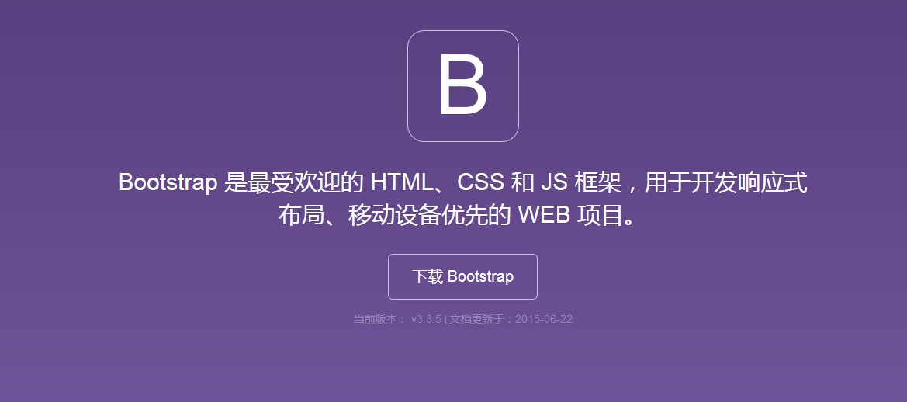
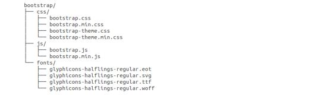
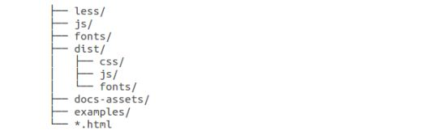

Bootstrap 安装是非常容易的。本章将讲解如何下载并安装 Bootstrap，讨论 Bootstrap 文件结构，并通过一个实例演示它的用法。
您可以从 Bootstrap中文网 上下载 Bootstrap 的最新版本。当您点击这个链接时，您将看到如下所示的网页：

您会看到两个按钮：
如果您使用的是未编译的源代码，您需要编译 LESS 文件来生成可重用的 CSS 文件。对于编译 LESS 文件，Bootstrap 官方只支持 Recess，这是 Twitter 的基于 less.js 的 CSS 提示。
为了更好的了解和更方便的使用，我们将在本教程中使用 Bootstrap 的预编译版本。
由于文件是被编译过和压缩过的，在独立的功能开发中，您不必每次都包含这些独立的文件。
本教程编写时，使用的是最新版（Bootstrap 3）。
当您下载了 Bootstrap 的已编译的版本，解压缩 ZIP 文件，您将看到下面的文件/目录结构：

如上图所示，可以看到已编译的 CSS 和 JS（bootstrap.*），以及已编译压缩的 CSS 和 JS（bootstrap.min.*）。同时也包含了 Glyphicons 的字体，这是一个可选的 Bootstrap 主题。
如果您下载了 Bootstrap 源代码，那么文件结构将如下所示：

一个使用了 Bootstrap 的基本的 HTML 模板如下所示：
<!DOCTYPE html> <html> <head> <title>Bootstrap 模板</title> <meta name="viewport" content="width=device-width, initial-scale=1.0"> <!-- 引入 Bootstrap --> <link href="http://apps.bdimg.com/libs/bootstrap/3.3.0/css/bootstrap.min.css" rel="stylesheet"> <!-- HTML5 Shim 和 Respond.js 用于让 IE8 支持 HTML5元素和媒体查询 --> <!-- 注意： 如果通过 file:// 引入 Respond.js 文件，则该文件无法起效果 --> <!--[if lt IE 9]> <script src="https://oss.maxcdn.com/libs/html5shiv/3.7.0/html5shiv.js"></script> <script src="https://oss.maxcdn.com/libs/respond.js/1.3.0/respond.min.js"></script> <![endif]--> </head> <body> <h1>Hello, world!</h1> <!-- jQuery (Bootstrap 的 JavaScript 插件需要引入 jQuery) --> <script src="https://code.jquery.com/jquery.js"></script> <!-- 包括所有已编译的插件 --> <script src="js/bootstrap.min.js"></script> </body> </html>
在这里，您可以看到包含了 jquery.js、bootstrap.min.js 和 bootstrap.min.css 文件，用于让一个常规的 HTML 文件变为使用了 Bootstrap 的模板。
有关上面代码段中每个元素的细节将在 Bootstrap CSS 概览 章节详细讲解。
现在让我们尝试使用Bootstrap输出"Hello, world!"：
<!DOCTYPE html> <html> <head> <title>在线尝试 Bootstrap 实例</title> <link href="http://apps.bdimg.com/libs/bootstrap/3.3.0/css/bootstrap.min.css" rel="stylesheet"> <script src="http://apps.bdimg.com/libs/jquery/2.0.0/jquery.min.js"></script> <script src="http://apps.bdimg.com/libs/bootstrap/3.3.0/js/bootstrap.min.js"></script> </head> <body> <h1>Hello, world!</h1> </body> </html>
本站实例采用的是百度的静态资源库(http://cdn.code.baidu.com/)上的Bootstrap资源。
百度的静态资源库的 CDN 服务，访问速度更快、加速效果更明显、没有速度和带宽限制、永久免费,引入代码如下：
<!-- 新 Bootstrap 核心 CSS 文件 --> <link href="http://apps.bdimg.com/libs/bootstrap/3.3.0/css/bootstrap.min.css" rel="stylesheet"> <!-- 可选的Bootstrap主题文件（一般不使用） --> <script src="http://apps.bdimg.com/libs/bootstrap/3.3.0/css/bootstrap-theme.min.css"></script> <!-- jQuery文件。务必在bootstrap.min.js 之前引入 --> <script src="http://apps.bdimg.com/libs/jquery/2.0.0/jquery.min.js"></script> <!-- 最新的 Bootstrap 核心 JavaScript 文件 --> <script src="http://apps.bdimg.com/libs/bootstrap/3.3.0/js/bootstrap.min.js"></script>